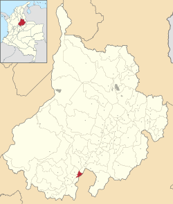
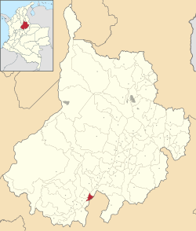

Güepsa es un municipio de Colombia, perteneciente a la provincia de Vélez en el departamento de Santander. Limita al norte con los municipios de San Benito, y Chipatá, al este con San José de Pare (Boyacá), con el río Suárez al medio, al oeste con Chipatá y Vélez y al sur con Barbosa, y se ubica a 204 km de Bucaramanga, capital del departamento. Su territorio, de aproximadamente 3.254,5 hectáreas está dividido política y administrativamente en 7 sectores rurales llamados veredas y la cabecera municipal que ocupa un área de terreno de 54.24 hectáreas.
Geografía
Se destaca en el municipio la cobertura vegetal de sistemas agroforestales, cultivos permanentes y semipermanentes, con grandes extensiones de caña panelera, y pequeñas manchas de café, cítricos, guayaba y plátano y algunos cultivos transitorios como maíz y yuca. El ecosistema estratégico más importante corresponde al sector que atraviesa el río Suárez, que configura el límite de este municipio con la población de San José de Pare . El río es utilizado por la población para múltiples actividades, tales como, pesca, riegos y vertimiento de residuos entre otros.
Posición geográfica
Economia
La actividad económica principal de este municipio se centra en el sector primario, es economía tradicional especialmente dirigida al cultivo de la caña panelera, y la cual ejerce elevada presión socioeconómica sobre los recursos naturales por ser ésta una región de minifundistas o pequeña propiedad. La actividad comercial y de servicios del municipio de Güepsa se ha concentrado en el área urbana, dada su ubicación geográfica y convergencia de las vías desde las diferentes veredas a la cabecera.
Turismo
Güepsa está definido como uno de los cuatro Corredores de Turismo y de Desarrollo Andino, identificado como el Nodo Barbosa y Vélez. Es bordeada por la quebrada el ropero en dónde posee lugares mágicos como lo son las «Pailas» que tienen un poder revitalizador.
Realmente es un sitio al cual podrás conocer en si la producción de panela o panelon más conocido comúnmente se comercializa y dentro de los trapiches se realiza el proceso de empaque y cargue de panela para su posterior comercialización.
.svg) 

{kind=link}
Mas Info: google maps